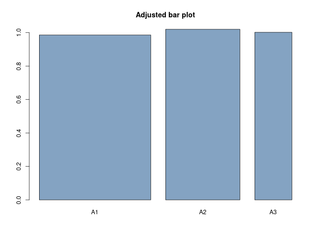
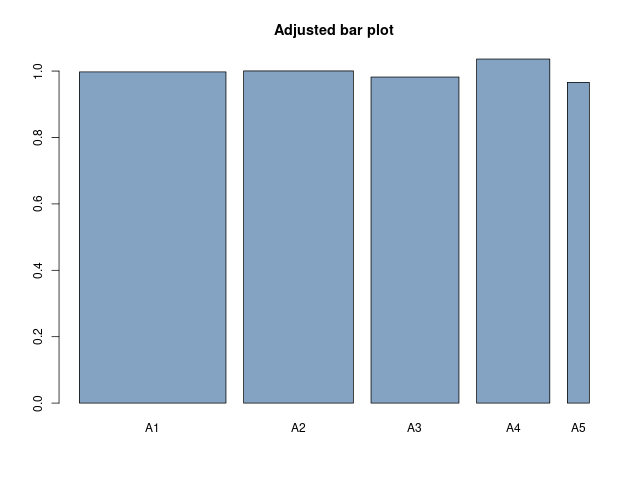
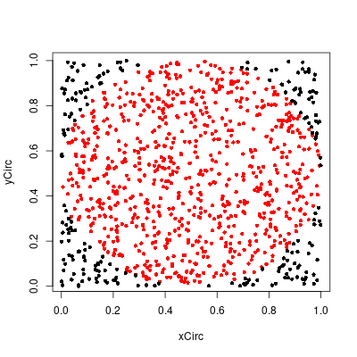
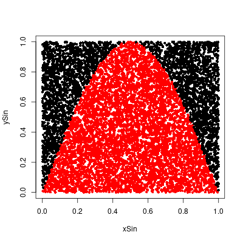
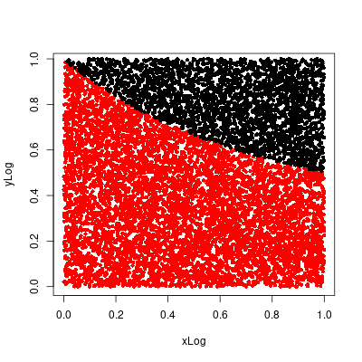
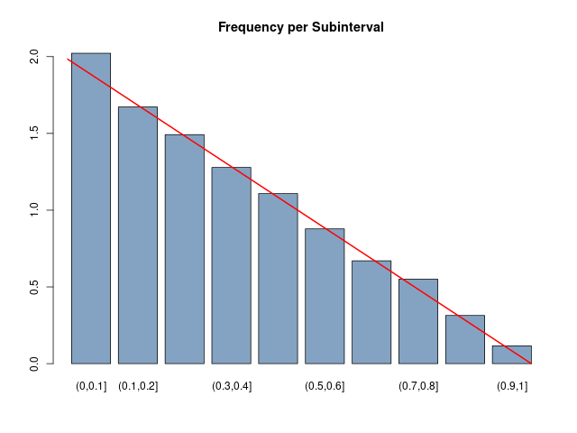

Chapter 2 - Continuous Probability Densities
2.1 Simulation of Continuous Probabilities
Exercise 1
In the spinner problem (see Example 2.1) divide the unit circumference into
three arcs of length 1/2, 1/3, and 1/6. Write a program to simulate the
spinner experiment 1000 times and print out what fraction of the outcomes
fall in each of the three arcs. Now plot a bar graph whose bars have width 1/2,
1/3, and 1/6, and areas equal to the corresponding fractions as determined
by your simulation. Show that the heights of the bars are all nearly the same.
Answer
Result:

Code
NSIM = 1000
simVals = runif(NSIM)
A1 = sum(simVals < 1/2)/NSIM
A2 = sum(simVals > 1/2 & simVals < 5/6)/NSIM
A3 = sum(simVals > 5/6)/NSIM
A1;A2;A3
df <- data.frame(
name=c("A1", "A2", "A3"),
value=c(A1, A2, A3),
area = c(2*A1, 3*A2, 6*A3)
)
barplot(height=df$area, names=df$name, col=rgb(0.2,0.4,0.6,0.6), width=c(1/2,1/3,1/6),
main="Adjusted bar plot")
png(filename = "~/GITHUB/CoveredInChocolate.github.io/IntroProb/img/02.01_Ex01.png",
width = 640, height=480)
barplot(height=df$area, names=df$name, col=rgb(0.2,0.4,0.6,0.6), width=c(1/2,1/3,1/6),
main="Adjusted bar plot")
dev.off()
Output
> A1;A2;A3
[1] 0.493
[1] 0.34
[1] 0.167
■
Exercise 2
Do the same as in Exercise 1, but divide the unit circumference into five arcs
of length 1/3, 1/4, 1/5, 1/6, and 1/20.
Answer
Result:

Code
NSIM = 10000
simVals = runif(NSIM)
A1 = sum(simVals < 1/3)/NSIM
A2 = sum(simVals > 1/3 & simVals < (1/3 + 1/4))/NSIM
A3 = sum(simVals > (1/3 + 1/4) & simVals < (1/3 + 1/4 + 1/5))/NSIM
A4 = sum(simVals > (1/3 + 1/4 + 1/5) & simVals < (1/3 + 1/4 + 1/5 + 1/6))/NSIM
A5 = sum(simVals > (1/3 + 1/4 + 1/5 + 1/6))/NSIM
A1;A2;A3;A4;A5
df <- data.frame(
name=c("A1", "A2", "A3", "A4", "A5"),
value=c(A1, A2, A3, A4, A5),
area = c(3*A1, 4*A2, 5*A3, 6*A4, 20*A5)
)
barplot(height=df$area, names=df$name, col=rgb(0.2,0.4,0.6,0.6), width=c(1/3,1/4,1/5,1/6,1/20),
main="Adjusted bar plot")
png(filename = "~/GITHUB/CoveredInChocolate.github.io/IntroProb/img/02.01_Ex02.png",
width = 640, height=480)
barplot(height=df$area, names=df$name, col=rgb(0.2,0.4,0.6,0.6), width=c(1/3,1/4,1/5,1/6,1/20),
main="Adjusted bar plot")
dev.off()
Output
> A1;A2;A3;A4;A5
[1] 0.3325
[1] 0.2501
[1] 0.1964
[1] 0.1727
[1] 0.0483
■
Exercise 3
Alter the program
MonteCarlo to estimate the area of the circle of radius
1/2 with center at (1/2, 1/2) inside the unit square by choosing 1000 points
at random. Compare your results with the true value of π/4. Use your results
to estimate the value of π. How accurate is your estimate?
Answer
Did a few simulations and the estimate for $\pi$ varied a bit. One good simulation gave 3.156. This could be
made better by increasing the number of simulated points.
Code
NVALS = 1000
vlsX = runif(NVALS)
vlsY = runif(NVALS)
hit = 0
hitCoords = c()
for (k in 1:NVALS) {
if ((vlsX[k]-1/2)^2 + (vlsY[k]-1/2)^2 <= 1/4) {
hit = hit + 1
hitCoords = c(hitCoords, k)
}
}
hit
length(hitCoords)
xCirc = vlsX[hitCoords]
yCirc = vlsY[hitCoords]
xOut = vlsX[-hitCoords]
yOut = vlsY[-hitCoords]
png(filename = "~/GITHUB/CoveredInChocolate.github.io/IntroProb/img/02.01_Ex03.png",
width=400, height=400)
plot(xCirc, yCirc, col="red", pch=16, cex=0.8)
points(xOut, yOut, pch=16, cex=0.8)
dev.off()
hit/1000
4*hit/1000
Output
> hit/1000
[1] 0.789
> #pi
> 4*hit/1000
[1] 3.156

■
Exercise 4
Alter the program
MonteCarlo to estimate the area under the graph of
$y = \sin \pi x$ inside the unit square by choosing 10,000 points at random. Now
calculate the true value of this area and use your results to estimate the value
of π. How accurate is your estimate?
Answer
Calculating the true value of the area in the interval [0, 1].
\begin{align}
\int_0^1\sin(\pi x)dx
&= \left[-\frac{1}{\pi}\cos(\pi x)\right]_0^1 \\
&= -\frac{1}{\pi}\cos(\pi) + \frac{1}{\pi}\cos(0) \\
&= \frac{1}{\pi} + \frac{1}{\pi} \\
&= \frac{2}{\pi}
\end{align}
The estimate for $2/\pi$ is quite close and the estimate for $\pi$ is around 3.137747.
Code
NVALS = 10000
vlsX = runif(NVALS)
vlsY = runif(NVALS)
hit = 0
hitCoords = c()
for (k in 1:NVALS) {
if (vlsY[k] <= sin(pi*vlsX[k])) {
hit = hit + 1
hitCoords = c(hitCoords, k)
}
}
hit
length(hitCoords)
xSin = vlsX[hitCoords]
ySin = vlsY[hitCoords]
xOut = vlsX[-hitCoords]
yOut = vlsY[-hitCoords]
plot(xSin, ySin, col="red", pch=16, cex=0.8)
points(xOut, yOut, pch=16, cex=0.8)
png(filename = "~/GITHUB/CoveredInChocolate.github.io/IntroProb/img/02.01_Ex04.png",
width=400, height=400)
plot(xSin, ySin, col="red", pch=16, cex=0.8)
points(xOut, yOut, pch=16, cex=0.8)
dev.off()
hit/NVALS
2/pi
(hit/NVALS)/(2/pi)
Output
> # 2/pi
> hit/NVALS
[1] 0.6374
> 2/pi
[1] 0.6366198
> (hit/NVALS)/(2/pi)
[1] 1.001226
>
> # pi
> 2/(hit/NVALS)
[1] 3.137747

■
Exercise 5
Alter the program
MonteCarlo to estimate the area under the graph of
$y = 1/(x + 1)$ in the unit square in the same way as in Exercise 4. Calculate
the true value of this area and use your simulation results to estimate the
value of $\ln 2$. How accurate is your estimate?
Answer
Calculating the true value.
\begin{align}
\int_0^1 \frac{1}{x + 1}dx
&= \Big[\ln(x + 1)\Big]_0^1 \\
&= \ln(2) - \ln(1) \\
&= \ln(2) \\
&\approx 0.6931472
\end{align}
Estimated value is 0.6939, which is close to the approximated true value, 0.6931472. As shown below the simulated
estimate is within 0.1% of the true value.
Code
NVALS = 10000
vlsX = runif(NVALS)
vlsY = runif(NVALS)
hit = 0
hitCoords = c()
for (k in 1:NVALS) {
if (vlsY[k] <= 1/(vlsX[k] + 1)) {
hit = hit + 1
hitCoords = c(hitCoords, k)
}
}
hit
length(hitCoords)
xLog = vlsX[hitCoords]
yLog = vlsY[hitCoords]
xOut = vlsX[-hitCoords]
yOut = vlsY[-hitCoords]
plot(xLog, yLog, col="red", pch=16, cex=0.8)
points(xOut, yOut, pch=16, cex=0.8)
png(filename = "~/GITHUB/CoveredInChocolate.github.io/IntroProb/img/02.01_Ex05.png",
width=400, height=400)
plot(xLog, yLog, col="red", pch=16, cex=0.8)
points(xOut, yOut, pch=16, cex=0.8)
dev.off()
hit/NVALS
log(2)
(hit/NVALS)/log(2)
Output
> # log(2)
> hit/NVALS
[1] 0.6939
> log(2)
[1] 0.6931472
> (hit/NVALS)/log(2)
[1] 1.001086

■
Exercise 6
To simulate the Buffon’s needle problem we choose independently the distance
d and the angle $\theta$ at random, with $0 \leq d \leq 1/2$ and $0 \leq \theta \leq \pi/2$,
and check whether $d \leq (1/2)\sin\theta$. Doing this a large number of times, we
estimate $\pi$ as $2/a$, where $a$ is the fraction of the times that $d \leq (1/2)\sin\theta$.
Write a program to estimate $\pi$ by this method. Run your program several
times for each of 100, 1000, and 10,000 experiments. Does the accuracy of
the experimental approximation for $\pi$ improve as the number of experiments
increases?
Answer
The approximation for $\pi$ does become closer on average, but it is still quite unstable. Sometimes
a simulation with 1.000.000 performed worse than a simulation with 10.000 experiments.
Code
simBuffon <- function(NSIMS) {
d = runif(NSIMS, min = 0, max = 0.5)
theta = runif(NSIMS, min = 0, max = pi/2)
a = sum(d < 0.5*sin(theta))/NSIMS
piapprox = 2/a
return(piapprox)
}
simBuffon(100)
simBuffon(1000)
simBuffon(10000)
simBuffon(100000)
simBuffon(1000000)
Output
> simBuffon(100)
[1] 3.389831
> simBuffon(1000)
[1] 3.12989
> simBuffon(10000)
[1] 3.137255
> simBuffon(100000)
[1] 3.13952
> simBuffon(1000000)
[1] 3.143656
■
Exercise 7
For Buffon’s needle problem, Laplace considered a grid with horizontal and
vertical lines one unit apart. He showed that the probability that a needle of
length L ≤ 1 crosses at least one line is
$$
p = \frac{4L - L^2}{\pi}
$$
To simulate this experiment we choose at random an angle $\theta$ between 0 and
$\pi/2$ and independently two numbers $d_1$ and $d_2$ between 0 and L/2. (The two
numbers represent the distance from the center of the needle to the nearest
horizontal and vertical line.) The needle crosses a line if either $d_1 \leq (L/2)\sin\theta$
or $d_2 \leq (L/2)\cos\theta$. We do this a large number of times and estimate $\pi$ as
$$
\overline{\pi} = \frac{4L - L^2}{a}
$$
where a is the proportion of times that the needle crosses at least one line.
Write a program to estimate $\pi$ by this method, run your program for 100,
1000, and 10,000 experiments, and compare your results with Buffon’s method
described in Exercise 6. (Take L = 1.)
Answer
The estimates for $\pi$ appear to be quite a lot closer with the Laplace method, especially for
smaller values of $n$.
Code
simLaplace <- function(NSIMS) {
L = 1
d1 = runif(NSIMS, min = 0, max = L/2)
d2 = runif(NSIMS, min = 0, max = L/2)
theta = runif(NSIMS, min = 0, max = pi/2)
a = sum(d1 < 0.5*sin(theta) | d2 < 0.5*cos(theta))/NSIMS
piapprox = (4*L - L^2)/a
return(piapprox)
}
simLaplace(100)
simLaplace(1000)
simLaplace(10000)
simLaplace(100000)
simLaplace(1000000)
Output
> simLaplace(100)
[1] 3.061224
> simLaplace(1000)
[1] 3.10559
> simLaplace(10000)
[1] 3.143666
> simLaplace(100000)
[1] 3.141789
> simLaplace(1000000)
[1] 3.142694
■
Exercise 8
A long needle of length L much bigger than 1 is dropped on a grid with
horizontal and vertical lines one unit apart. We will see (in Exercise 6.3.28)
that the average number $a$ of lines crossed is approximately
$$
a = \frac{4L}{\pi}
$$
To estimate π by simulation, pick an angle θ at random between 0 and π/2 and
compute $L\sin\theta + L\cos\theta$. This may be used for the number of lines crossed.
Repeat this many times and estimate π by
$$
\overline{\pi} = \frac{4L}{a}
$$
where a is the average number of lines crossed per experiment. Write a program
to simulate this experiment and run your program for the number of
experiments equal to 100, 1000, and 10,000. Compare your results with the
methods of Laplace or Buffon for the same number of experiments. (Use
L = 100.)
Answer
The estimates are even closer to $\pi$, with the result for 1.000.000 experiments falls within
0.0001% of $\pi$. That's pretty close!
Code
simLongNeedle <- function(NSIMS) {
L = 100
theta = runif(NSIMS, min = 0, max = pi/2)
a = mean(L*sin(theta) + L*cos(theta))
piapprox = (4*L)/a
return(piapprox)
}
simLongNeedle(100)
simLongNeedle(1000)
simLongNeedle(10000)
simLongNeedle(100000)
simLongNeedle(1000000)
Output
> simLongNeedle(100)
[1] 3.13445
> simLongNeedle(1000)
[1] 3.14688
> simLongNeedle(10000)
[1] 3.143391
> simLongNeedle(100000)
[1] 3.140012
> simLongNeedle(1000000)
[1] 3.141351
> pi
[1] 3.141593
> pi/3.141351
[1] 1.000077
■
Exercise 9
Skipped. Poorly formulated exercise.
Exercise 10
In this problem, we will
again consider an experiment whose outcomes are not equally likely. We will
determine a function $f(x)$ which can be used to determine the probability of
certain events. Let T be the right triangle in the plane with vertices at the
points (0, 0), (1, 0), and (0, 1). The experiment consists of picking a point
at random in the interior of T , and recording only the x-coordinate of the
point. Thus, the sample space is the set [0, 1], but the outcomes do not seem
to be equally likely. We can simulate this experiment by asking a computer to
return two random real numbers in [0, 1], and recording the first of these two
numbers if their sum is less than 1. Write this program and run it for 10,000
trials. Then make a bar graph of the result, breaking the interval [0, 1] into
10 intervals. Compare the bar graph with the function $f(x) = 2 − 2x$. Now
show that there is a constant c such that the height of T at the x-coordinate
value x is c times f (x) for every x in [0, 1]. Finally, show that
$$
\int_0^1 f(x) dx = 1
$$
How might one use the function $f(x)$ to determine the probability that the
outcome is between 0.2 and 0.5?
Answer
Code
simTriangle <- function(NSIMS) {
x = runif(NSIMS)
y = runif(NSIMS)
ind = x + y < 1
return(x[ind])
}
xval = simTriangle(10000)
xcut = cut(xval, c(0,1:10/10))
df = data.frame(
xcat = xcut,
cnt = 1
)
df2 = aggregate(df$cnt, by=list(df$xcat), FUN = sum)
names(df2) = c("Interval", "Freq")
barplot(height=df2$Freq/500, names=df2$Interval , col=rgb(0.2,0.4,0.6,0.6), width=1,
main="Frequency per Subinterval")
plotx = 1:120/10
lines(plotx, 2 - (1/6)*plotx, col="red", lwd=2)
png(filename = "~/GITHUB/CoveredInChocolate.github.io/IntroProb/img/02.01_Ex10.png",
width = 640, height=480)
barplot(height=df2$Freq/500, names=df2$Interval , col=rgb(0.2,0.4,0.6,0.6), width=1,
main="Frequency per Subinterval")
plotx = 1:120/10
lines(plotx, 2 - (1/6)*plotx, col="red", lwd=2)
dev.off()
Output

■
Exercise 11
Here is another way to pick a chord at random on the circle of unit radius.
Imagine that we have a card table whose sides are of length 100. We place
coordinate axes on the table in such a way that each side of the table is parallel
to one of the axes, and so that the center of the table is the origin. We now
place a circle of unit radius on the table so that the center of the circle is the
origin. Now pick out a point $(x_0 , y_0)$ at random in the square, and an angle θ
at random in the interval (−π/2, π/2). Let $m = \tan\theta$. Then the equation of
the line passing through $(x_0 , y_0)$ with slope m is
$$
y = y_0 + m(x - x_0)
$$
and the distance of this line from the center of the circle (i.e., the origin) is
$$
d = \left|\frac{y_0 - mx_0}{\sqrt{m^2 + 1}}\right|
$$
We can use this distance formula to check whether the line intersects the circle
(i.e., whether d < 1). If so, we consider the resulting chord a
random chord.
This describes an experiment of dropping a long straw at random on a table
on which a circle is drawn.
Write a program to simulate this experiment 10.000 times
and estimate the probability that the length of the chord is greater than $\sqrt{3}$.
How does your estimate compare with the results of Example 2.6?
Answer
This experiment gives a fourth interpretation, since the proportion of chords of length larger than $\sqrt{3}$
is about 0.577 (and quite consistently). Presumably, this represents a separate interpretation.
Code
simChord <- function(NSIMS) {
x0 = runif(NSIMS)
y0 = runif(NSIMS)
theta = runif(NSIMS, min=-pi/2, max=pi/2)
m = tan(theta)
d = abs((y0 - m*x0)/(sqrt(m**2 + 1)))
chordInd = d < 1
chords = d[chordInd]
prop = sum(chords < 0.5)/length(chords)
return(prop)
}
res = simChord(10000)
res
Output
> res = simChord(10000)
> res
[1] 0.5779924
■